News & publications
From the center.
Grants, honors, talks, and publications from VCII's founding directors and VUIIS. Select any story to read it at its source.
All news
Cerebra, a multidisciplinary AI board for dementia, accepted in Nature Biomedical Engineering
Nature Biomedical Engineering ↗
Publication · Dr. Fang
Invited talk at the Montreal AI and Neuroscience (MAIN) Conference: "Bridging Minds and Machines"
MAIN 2026, Montréal
Talk · Dr. Fang
Dr. Fang presents "From Images to Intelligence: Foundation Models, Digital Twins, and Agentic AI" at the VUIIS Retreat
VUIIS Retreat
Talk · Dr. Fang
Invited talk at the Center for Computational Systems Biology Retreat on digital twins and agentic AI for brain health
Vanderbilt CCSB
Talk · Dr. Fang
Invited talk at the BMES Annual Meeting on brain digital twins, foundation models and agentic AI
BMES 2026, Orlando
Talk · Dr. Fang
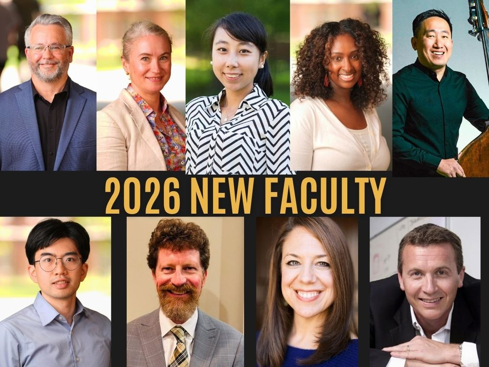
New faculty share why they chose Vanderbilt, including Dr. Fang
Vanderbilt News ↗
Feature · Dr. Fang
Neurology Today: deep learning model reads Alzheimer's risk factors from retinal photos
Neurology Today ↗
Feature · Dr. Fang
VISE seminar: multimodal AI for precision brain health
Vanderbilt Institute for Surgery and Engineering ↗
Talk · Dr. Fang
VUIIS receives $3.4M NCI grant, with Philips, to advance MR cytometry for breast cancer
Vanderbilt Health News ↗
Funding · Dr. Gore
Vanderbilt AI Summer School lecture: "Two-Way Intelligence: What Brains Teach AI and AI Teaches Us About the Brain"
Vanderbilt AI Summer School
Talk · Dr. Fang
UK Biobank: your dementia risk is hidden in your eyes
UK Biobank ↗
Feature · Dr. Fang
Focused ultrasound modulates spiking, LFP and BOLD activity in the primate thalamus
Nature Communications ↗
Publication · Dr. Gore
"When Brain Meets AI" at the National Academy of Medicine Emerging Leaders meeting
National Academy of Medicine
Talk · Dr. Fang
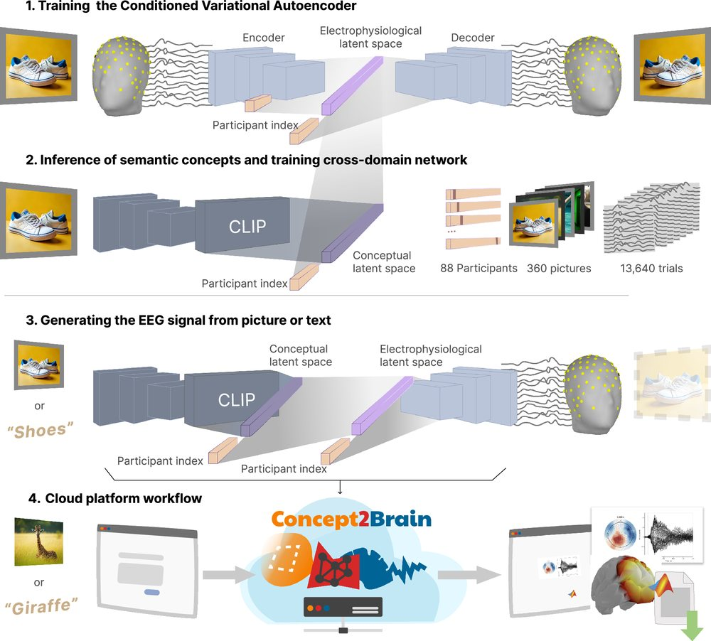
Concept2Brain, an AI model that predicts neural responses to text and pictures, accepted in Nature Communications
Nature Communications ↗
Publication · Dr. Fang
New NSF award on metacognition in human-AI joint decision-making
National Science Foundation
Funding · Dr. Fang
Routine retinal photos can flag Alzheimer's risk factors years before symptoms
UF News ↗
Feature · Dr. Fang
REVEAL++ for retinal modeling of Alzheimer's risk accepted at MICCAI 2026
MICCAI 2026 ↗
Publication · Dr. Fang
Dr. Fang selected for the NAE Grainger Foundation Frontiers of Engineering Symposium
National Academy of Engineering
Honor · Dr. Fang
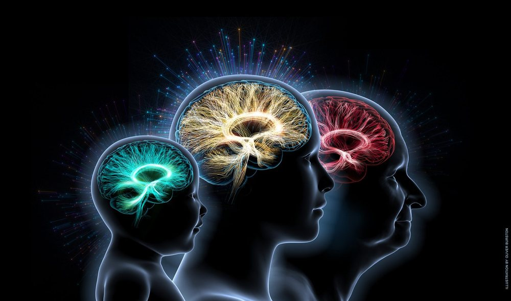
White-matter brain charts for the human lifespan, published in Nature
Vanderbilt News ↗
Publication · Dr. Gore
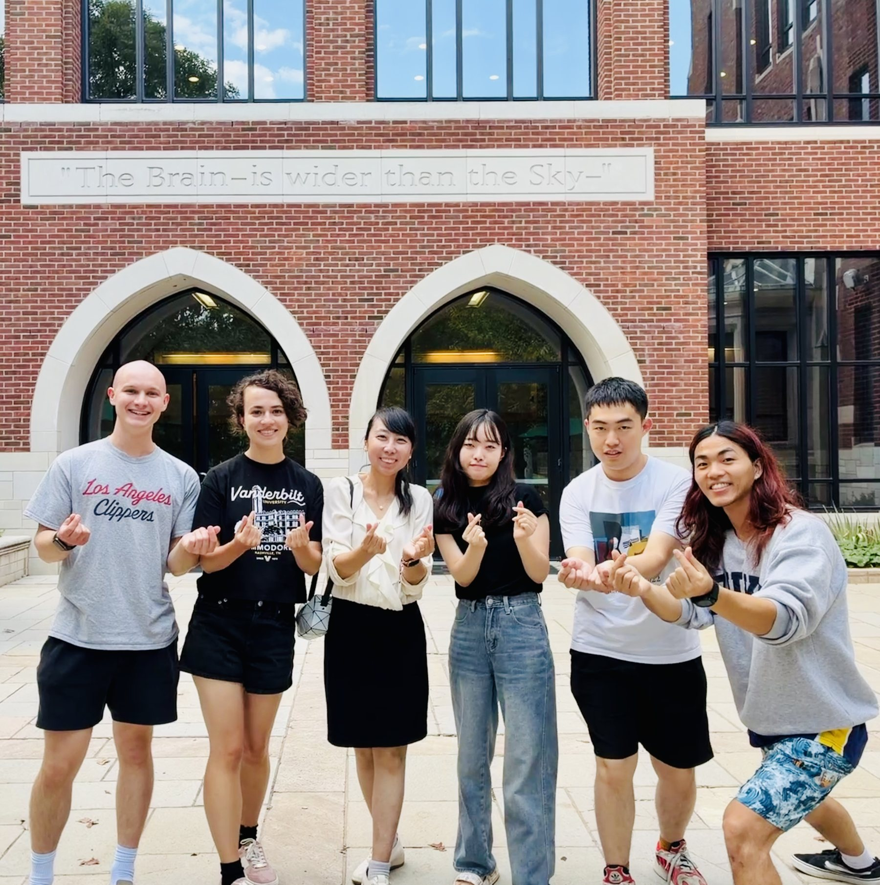
Leading researcher in brain-inspired AI and neuroimaging joins Vanderbilt School of Engineering
Vanderbilt Engineering ↗
Leadership · Dr. Fang
Dr. Fang named a National Academy of Medicine Emerging Leader in Health and Medicine
National Academy of Medicine ↗
Honor · Dr. Fang
NSF supplement funds "Brain x AI 101", a neuroscience-AI curriculum for high schools
National Science Foundation
Funding · Dr. Fang
MaLMIC talk on brain digital twins and foundation models, hosted by the University of Toronto and OICR
Machine Learning Medical Imaging Consortium
Talk · Dr. Fang
Harvard Center for Machine Learning seminar: "A Tale of Two Frontiers: Intelligence in Nature, Insight in Machines"
Harvard University
Talk · Dr. Fang
Self-supervised manifold learning reveals neurocognitive patterns, in Nature Computational Science
Nature Computational Science ↗
Publication · Dr. Fang
NIH S10 award of $2.0M for a new whole-body 3T research MRI scanner at VUIIS
NIH Office of the Director ↗
Funding · Dr. Gore
Functional contrast across the gray-white matter boundary, in Nature Communications
Nature Communications ↗
Publication · Dr. Gore
Martinos Center talk on multimodal digital twins and medical foundation models for brain health
Martinos Center, MGH / HMS / MIT
Talk · Dr. Fang
Ouroboros, single-step diffusion for forward and inverse rendering, accepted at ICCV 2025
ICCV 2025 ↗
Publication · Dr. Fang
Dr. Fang ranked among the top 100 image analysis researchers worldwide
ScholarGPS
Honor · Dr. Fang
Harvard Medical School and Mass General Brigham Radiology talk: "When Brain Meets AI"
HMS / MGB Radiology
Talk · Dr. Fang
NIH S10 award of $1.9M to replace the PET and MRI scanners for small-animal imaging
NIH Office of the Director ↗
Funding · Dr. Gore
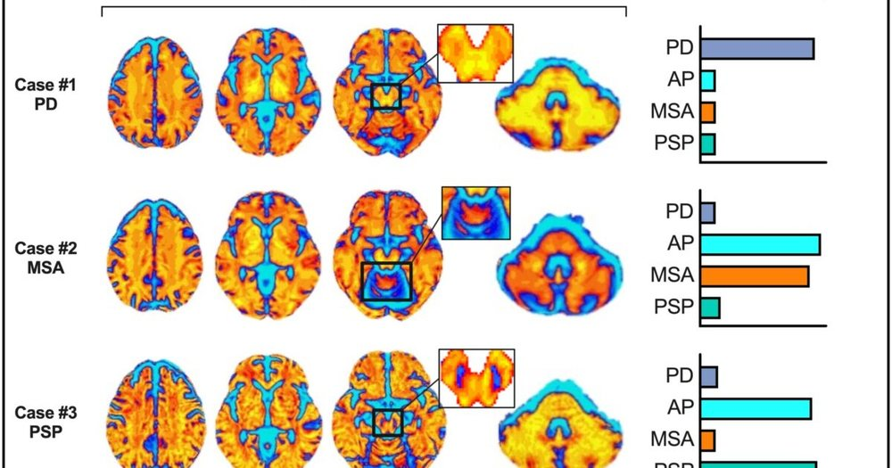
AI imaging improves Parkinson's diagnoses, in JAMA Neurology
UF Health News ↗
Publication · Dr. Fang
Dr. Fang receives the college's Doctoral Dissertation Advisor and Mentoring Award
UF Biomedical Engineering ↗
Honor · Dr. Fang
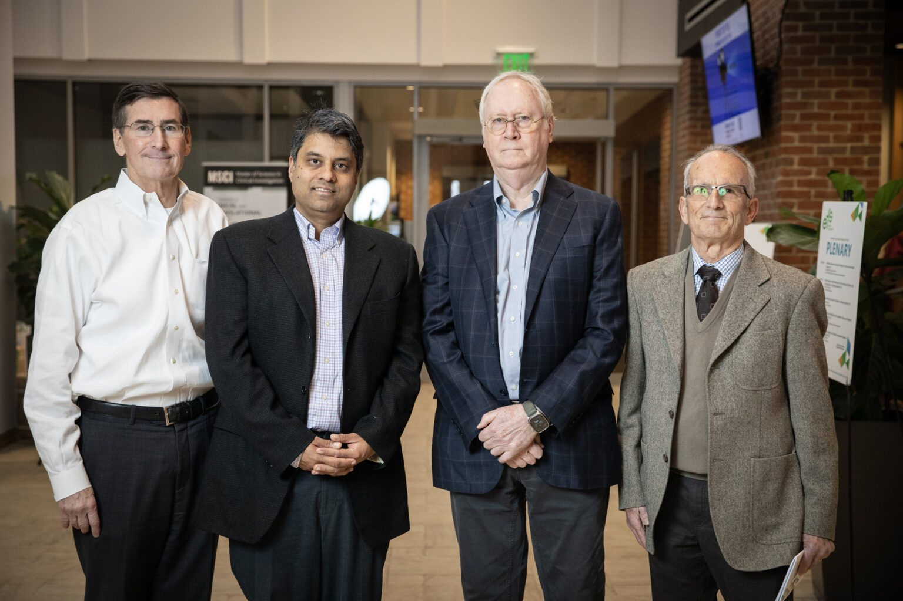
Vanderbilt Health honors four translational scientists, including Dr. Gore
Vanderbilt Health News ↗
Honor · Dr. Gore
Stanford Radiology talk on multimodal digital twins and 3D vision foundation models
Stanford University
Talk · Dr. Fang
UC Berkeley–UCSF Computational Precision Health seminar on brain digital twins
UC Berkeley–UCSF CPH
Talk · Dr. Fang

SMILE Lab presents at the BMES Annual Meeting
BMES 2024
Event · Dr. Fang
White matter may aid recovery from spinal cord injuries
Vanderbilt Health News ↗
Publication · Dr. Gore
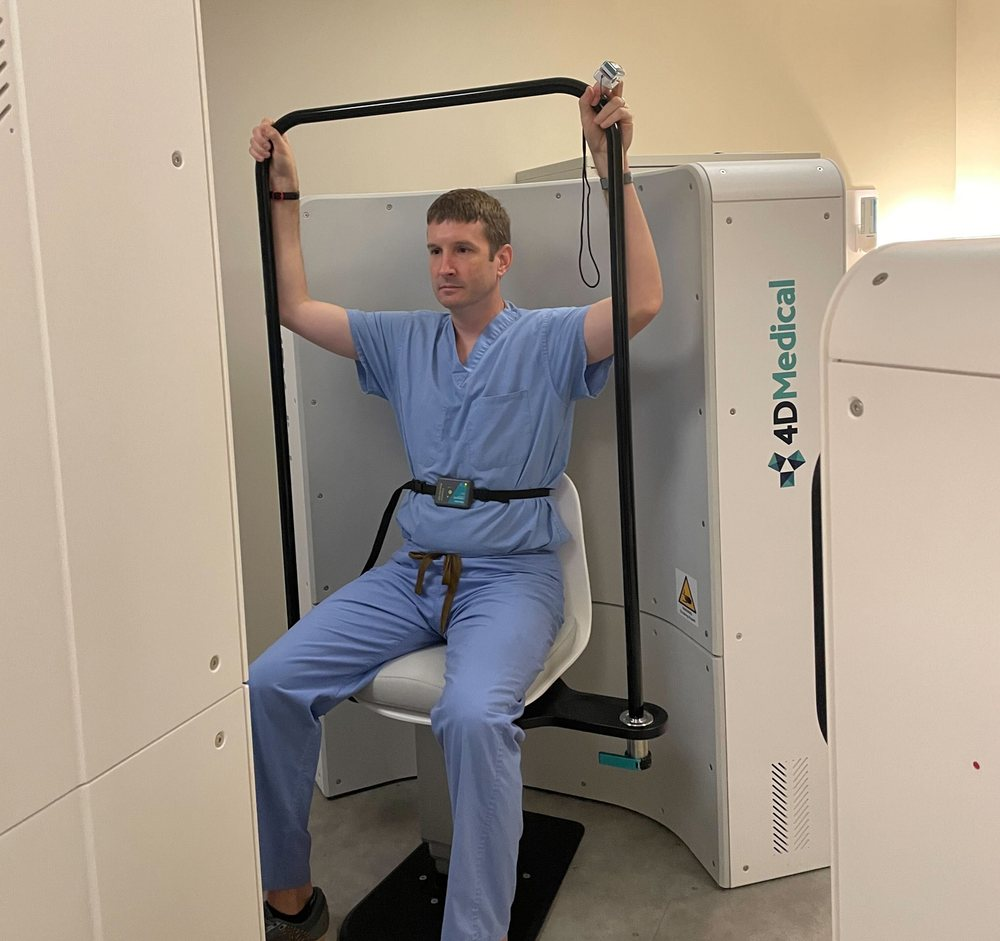
VUMC adds an X-ray velocimetry scanner to better detect lung dysfunction
Vanderbilt Health News ↗
Resources · Dr. Gore
BOLD signals detected in white matter of the spinal cord, in PNAS
PNAS ↗
Publication · Dr. Gore
Dr. Gore gives the VUIIS seminar "Magical Thinking in Magnetic Resonance"
VUIIS Seminar Series ↗
Talk · Dr. Gore
3D brain mapping opens a window to the aging brain
Vanderbilt Health News ↗
Publication · Dr. Gore
VUMC scientists record a powerful signal in the brain's white matter
Vanderbilt Health News ↗
Publication · Dr. Gore
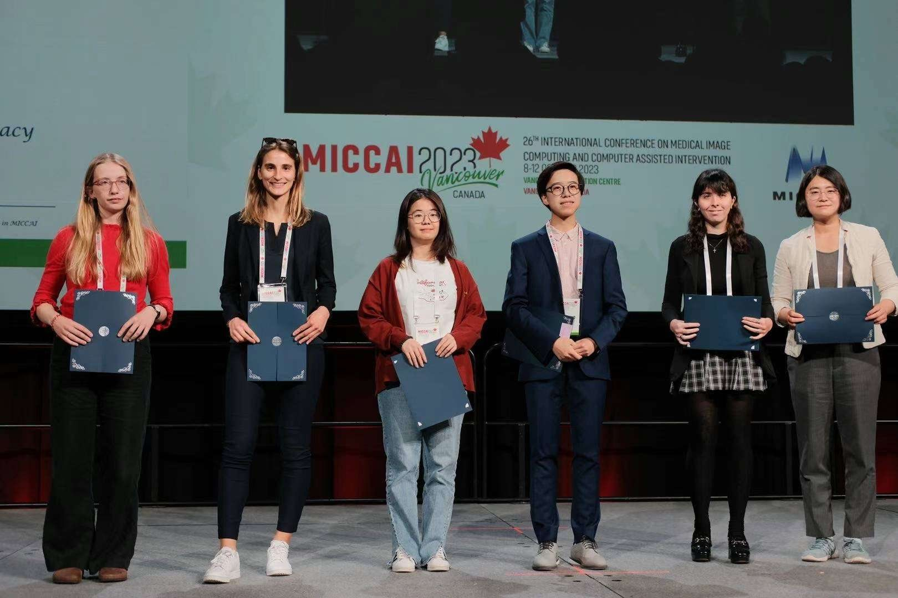
SMILE Lab recognized at MICCAI 2023 in Vancouver
MICCAI 2023
Honor · Dr. Fang
Dr. Fang named a Rising Star by the Academy of Science, Engineering and Medicine of Florida
UF Biomedical Engineering ↗
Honor · Dr. Fang
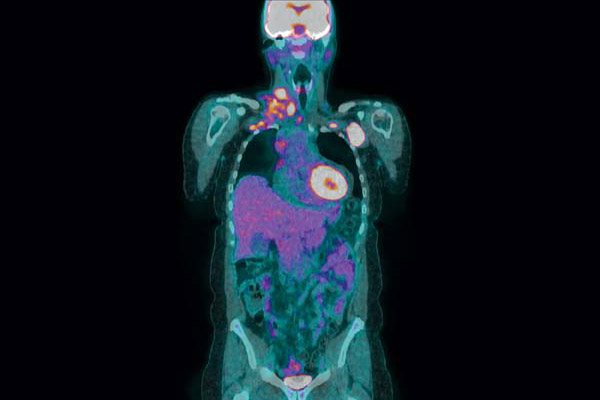
Chan Zuckerberg Initiative grant bolsters VUIIS deep-tissue imaging research
Vanderbilt Health News ↗
Funding · Dr. Gore
Dr. Gore named to a National Academies committee on worker health overseas
Vanderbilt Health News ↗
Leadership · Dr. Gore
Dr. Gore elected to the 2019 IAMBE Class of Fellows
Vanderbilt Health News ↗
Honor · Dr. Gore
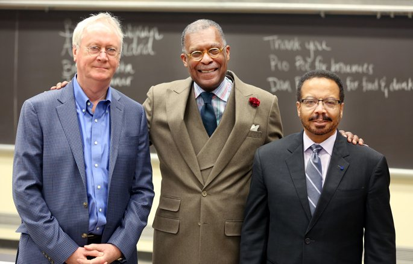
NIBIB director Roderic Pettigrew gives a Flexner Discovery Lecture, hosted with Dr. Gore
Vanderbilt News ↗
Event · Dr. Gore
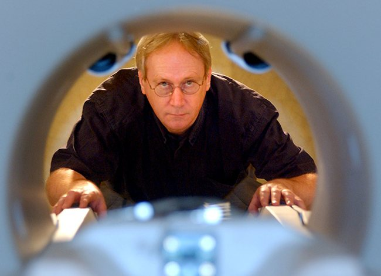
Dr. Gore named a fellow of the National Academy of Inventors
Vanderbilt Health News ↗
Honor · Dr. Gore

Dr. Gore elected to the National Academy of Engineering
Vanderbilt Health News ↗
Honor · Dr. Gore